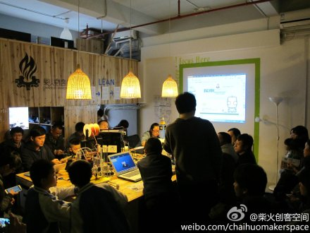

|
创客正在创造中国经济社会发展的未来 国务院总理李克强在政府工作报告中谈到大力调整产业结构时指出，2014年我国着力培育新的增长点，众多“创客”脱颖而出，文化创意产业蓬勃发展。这是创客第一次写入政府工作报告。李克强总理对于创客一直都很重视，给予很高的评价。2015年1月4日，李克强就考察过深圳柴火创客空间，体验各位年轻创客的创意产品。总理现场评价说：“创客充分展示了大众创业、万众创新的活力。这种活力和创造，将会成为中国经济未来增长的不熄引擎。” |
|
 |
 |
 |
创客大拿叶琛叶琛，国内知名的创客网站DFrobot的创始人。从诺丁汉大学取得工程学博士学位后，叶琛便回到上海创办了DFROBOT公司，这个被命名为开源硬件及机器人的梦工厂，也就是DreamFactoryRobot的缩写，成了日后叶琛和广大创客们栖息交流的乐土。 |
新车间李大维相信从事开源硬件行业的人，没几个不认识李大维。他曾经参与过著名导演史蒂芬.斯皮尔伯格的互动式多媒体项目、迪士尼虚拟世界项目，也为Facebook等名企设计社交应用。他从事软件行业20多年，并一直致力于开源软件运动。近几年来，他顺应着开源硬件这股潮流，开始了自己的硬件之旅。 |
创客布道师--程晨被圈内称之为“大牛”的程晨认为创客就是一群喜欢动手，努力把自己的想法实现的人。但他的眼中创客并不简简单单只是一群人，创客是一种文化，是随着互联网的发展和开源硬件兴起慢慢成长起来的一种亚文化，是在大众文化当中产生的变种文化。这种文化宣扬动手实践和开源分享，呼吁大家从自身兴趣出发而不是以赚钱为首要目的。 |
 |
 |  |
南京创客空间南京创客空间是由南京地区一群软、硬件技术人才发起的民间科技公益组织（平台），成立于2012年5月，现有核心成员200人，成员专业方向涵盖计算机、电子、电力、建筑、艺术、机械制造、管理、经济等诸多领域。 |
柴火创客空间柴火创客空间寓意于“众人拾柴火焰高”，为创新制作者（Maker）提供自由开放的协作环境，鼓励跨界的交流，促进创意的实现以至产品化。 |
|